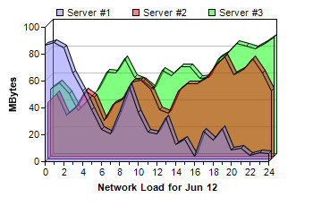

This example demonstrates using multiple area layers with semi-transparent colors to create a depth area chart.
ChartDirector allows an XYChart to containing multiple layers of the same or different types. In this example, all layers are 3D area layers. The areas are filled using semi-transparent colors to avoid the area on the front hiding the areas at the back.
The following is the command line version of the code in "cppdemo/deptharea". The MFC version of the code is in "mfcdemo/mfcdemo". The Qt Widgets version of the code is in "qtdemo/qtdemo". The QML/Qt Quick version of the code is in "qmldemo/qmldemo".
#include "chartdir.h"
int main(int argc, char *argv[])
{
// The data for the area chart
double data0[] = {42, 49, 33, 38, 51, 46, 29, 41, 44, 57, 59, 52, 37, 34, 51, 56, 56, 60, 70,
76, 63, 67, 75, 64, 51};
const int data0_size = (int)(sizeof(data0)/sizeof(*data0));
double data1[] = {50, 55, 47, 34, 42, 49, 63, 62, 73, 59, 56, 50, 64, 60, 67, 67, 58, 59, 73,
77, 84, 82, 80, 84, 89};
const int data1_size = (int)(sizeof(data1)/sizeof(*data1));
double data2[] = {87, 89, 85, 66, 53, 39, 24, 21, 37, 56, 37, 22, 21, 33, 13, 17, 4, 23, 16, 25,
9, 10, 5, 7, 6};
const int data2_size = (int)(sizeof(data2)/sizeof(*data2));
const char* labels[] = {"0", "1", "2", "3", "4", "5", "6", "7", "8", "9", "10", "11", "12",
"13", "14", "15", "16", "17", "18", "19", "20", "21", "22", "23", "24"};
const int labels_size = (int)(sizeof(labels)/sizeof(*labels));
// Create a XYChart object of size 350 x 230 pixels
XYChart* c = new XYChart(350, 230);
// Set the plotarea at (50, 30) and of size 250 x 150 pixels.
c->setPlotArea(50, 30, 250, 150);
// Add a legend box at (55, 0) (top of the chart) using 8pt Arial Font. Set background and
// border to Transparent.
c->addLegend(55, 0, false, "", 8)->setBackground(Chart::Transparent);
// Add a title to the x axis
c->xAxis()->setTitle("Network Load for Jun 12");
// Add a title to the y axis
c->yAxis()->setTitle("MBytes");
// Set the labels on the x axis.
c->xAxis()->setLabels(StringArray(labels, labels_size));
// Display 1 out of 2 labels on the x-axis. Show minor ticks for remaining labels.
c->xAxis()->setLabelStep(2, 1);
// Add three area layers, each representing one data set. The areas are drawn in
// semi-transparent colors.
c->addAreaLayer(DoubleArray(data2, data2_size), 0x808080ff, "Server #1", 3);
c->addAreaLayer(DoubleArray(data0, data0_size), 0x80ff0000, "Server #2", 3);
c->addAreaLayer(DoubleArray(data1, data1_size), 0x8000ff00, "Server #3", 3);
// Output the chart
c->makeChart("deptharea.png");
//free up resources
delete c;
return 0;
}
© 2023 Advanced Software Engineering Limited. All rights reserved.